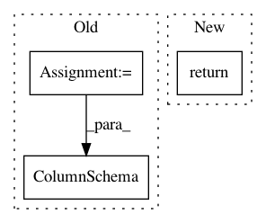

687e31d276db17b4ac7bea08b01c1e5401168ca9,tensorflow_transform/tf_metadata/metadata_io.py,,_column_schema_from_json,#Any#,64
Before Change
pass
representation = sch.FixedColumnRepresentation(default_value)
elif tf_options.get("varLenFeature") is not None:
representation = sch.ListColumnRepresentation()
else:
raise ValueError("Could not interpret tfOptions: {}".format(tf_options))
return sch.ColumnSchema(domain, axes, representation)
def _sparse_column_schema_from_json(feature_dict):
Translate a JSON sparse feature dict into a ColumnSchema.
After Change
pass
axes = feature_dict["fixedShape"].get("axis", [])
shape = [int(axis["size"]) for axis in axes]
return tf.FixedLenFeature(shape, dtype, default_value)
elif tf_options.get("varLenFeature") is not None:
return tf.VarLenFeature(dtype)
else:
raise ValueError("Could not interpret tfOptions: {}".format(tf_options))
In pattern: SUPERPATTERN
Frequency: 3
Non-data size: 3
Instances
Project Name: tensorflow/transform
Commit Name: 687e31d276db17b4ac7bea08b01c1e5401168ca9
Time: 2019-01-23
Author: tf-transform-dev@google.com
File Name: tensorflow_transform/tf_metadata/metadata_io.py
Class Name:
Method Name: _column_schema_from_json
Project Name: tensorflow/transform
Commit Name: 687e31d276db17b4ac7bea08b01c1e5401168ca9
Time: 2019-01-23
Author: tf-transform-dev@google.com
File Name: tensorflow_transform/schema_inference.py
Class Name:
Method Name: infer_feature_schema
Project Name: tensorflow/transform
Commit Name: 5b2fa49f9ee24bd079ab0c8d5373a3bfcfcc60b4
Time: 2017-03-07
Author: no-reply@google.com
File Name: tensorflow_transform/tf_metadata/dataset_schema.py
Class Name:
Method Name: _from_parse_feature